-
Commercial Functional Testing
11:49:47 am / 00:13:48:845 Fail
Commercial Functional Testing
12.28.2024 11:49:47 am 12.28.2024 12:03:36 pm 00:13:48:845 · #test-id=1PassTesting UI for Commercial pageGiven User is in the No Broker websitecom.nobroker.stepDefinition.NoBrokerStepDef.screenShot(io.cucumber.java.Scenario)Testing UI for Commercial page When User clicks on the Commercial buttoncom.nobroker.stepDefinition.NoBrokerStepDef.screenShot(io.cucumber.java.Scenario)Testing UI for Commercial page
When User clicks on the Commercial buttoncom.nobroker.stepDefinition.NoBrokerStepDef.screenShot(io.cucumber.java.Scenario)Testing UI for Commercial page And user is on the Commercial Pagecom.nobroker.stepDefinition.NoBrokerStepDef.screenShot(io.cucumber.java.Scenario)Testing UI for Commercial page
And user is on the Commercial Pagecom.nobroker.stepDefinition.NoBrokerStepDef.screenShot(io.cucumber.java.Scenario)Testing UI for Commercial page Then User can see location fieldcom.nobroker.stepDefinition.NoBrokerStepDef.screenShot(io.cucumber.java.Scenario)Testing UI for Commercial page
Then User can see location fieldcom.nobroker.stepDefinition.NoBrokerStepDef.screenShot(io.cucumber.java.Scenario)Testing UI for Commercial page And User can see localities or landmark fieldcom.nobroker.stepDefinition.NoBrokerStepDef.screenShot(io.cucumber.java.Scenario)Testing UI for Commercial page
And User can see localities or landmark fieldcom.nobroker.stepDefinition.NoBrokerStepDef.screenShot(io.cucumber.java.Scenario)Testing UI for Commercial page And User can see Rent buttoncom.nobroker.stepDefinition.NoBrokerStepDef.screenShot(io.cucumber.java.Scenario)Testing UI for Commercial page
And User can see Rent buttoncom.nobroker.stepDefinition.NoBrokerStepDef.screenShot(io.cucumber.java.Scenario)Testing UI for Commercial page And User can see Buy buttoncom.nobroker.stepDefinition.NoBrokerStepDef.screenShot(io.cucumber.java.Scenario)Testing UI for Commercial page
And User can see Buy buttoncom.nobroker.stepDefinition.NoBrokerStepDef.screenShot(io.cucumber.java.Scenario)Testing UI for Commercial page And User can see search buttoncom.nobroker.stepDefinition.NoBrokerStepDef.screenShot(io.cucumber.java.Scenario)Testing UI for Commercial page
And User can see search buttoncom.nobroker.stepDefinition.NoBrokerStepDef.screenShot(io.cucumber.java.Scenario)Testing UI for Commercial page And User can see post free property adcom.nobroker.stepDefinition.NoBrokerStepDef.screenShot(io.cucumber.java.Scenario)Testing UI for Commercial page
And User can see post free property adcom.nobroker.stepDefinition.NoBrokerStepDef.screenShot(io.cucumber.java.Scenario)Testing UI for Commercial page FailTesting commercial with valid inputsGiven User is in the No Broker websitecom.nobroker.stepDefinition.NoBrokerStepDef.screenShot(io.cucumber.java.Scenario)Testing commercial with valid inputs
FailTesting commercial with valid inputsGiven User is in the No Broker websitecom.nobroker.stepDefinition.NoBrokerStepDef.screenShot(io.cucumber.java.Scenario)Testing commercial with valid inputs When User clicks on the Commercial buttoncom.nobroker.stepDefinition.NoBrokerStepDef.screenShot(io.cucumber.java.Scenario)Testing commercial with valid inputs
When User clicks on the Commercial buttoncom.nobroker.stepDefinition.NoBrokerStepDef.screenShot(io.cucumber.java.Scenario)Testing commercial with valid inputs And user is on the Commercial Pagecom.nobroker.stepDefinition.NoBrokerStepDef.screenShot(io.cucumber.java.Scenario)Testing commercial with valid inputs
And user is on the Commercial Pagecom.nobroker.stepDefinition.NoBrokerStepDef.screenShot(io.cucumber.java.Scenario)Testing commercial with valid inputs When User enter dropdown buttoncom.nobroker.stepDefinition.NoBrokerStepDef.screenShot(io.cucumber.java.Scenario)Testing commercial with valid inputs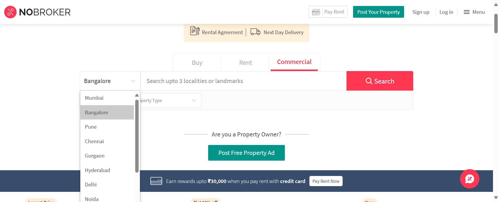And User enter locationcom.nobroker.stepDefinition.NoBrokerStepDef.screenShot(io.cucumber.java.Scenario)Testing commercial with valid inputs
When User enter dropdown buttoncom.nobroker.stepDefinition.NoBrokerStepDef.screenShot(io.cucumber.java.Scenario)Testing commercial with valid inputs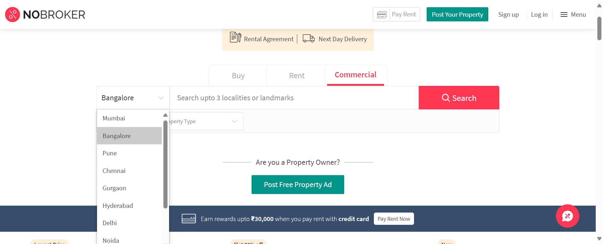And User enter locationcom.nobroker.stepDefinition.NoBrokerStepDef.screenShot(io.cucumber.java.Scenario)Testing commercial with valid inputs And User enter any three locality
And User enter any three localitySortBy.xlsx com.nobroker.stepDefinition.NoBrokerStepDef.screenShot(io.cucumber.java.Scenario)Testing commercial with valid inputs And User select rent optioncom.nobroker.stepDefinition.NoBrokerStepDef.screenShot(io.cucumber.java.Scenario)Testing commercial with valid inputs
And User select rent optioncom.nobroker.stepDefinition.NoBrokerStepDef.screenShot(io.cucumber.java.Scenario)Testing commercial with valid inputs And User enters property typecom.nobroker.stepDefinition.NoBrokerStepDef.screenShot(io.cucumber.java.Scenario)Testing commercial with valid inputs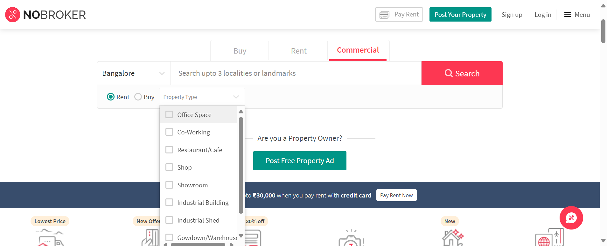And user select any one propertycom.nobroker.stepDefinition.NoBrokerStepDef.screenShot(io.cucumber.java.Scenario)Testing commercial with valid inputs
And User enters property typecom.nobroker.stepDefinition.NoBrokerStepDef.screenShot(io.cucumber.java.Scenario)Testing commercial with valid inputs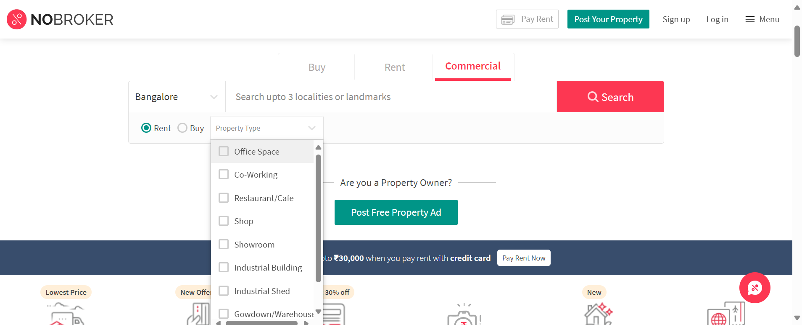And user select any one propertycom.nobroker.stepDefinition.NoBrokerStepDef.screenShot(io.cucumber.java.Scenario)Testing commercial with valid inputs And User enter search buttoncom.nobroker.stepDefinition.NoBrokerStepDef.screenShot(io.cucumber.java.Scenario)Testing commercial with valid inputs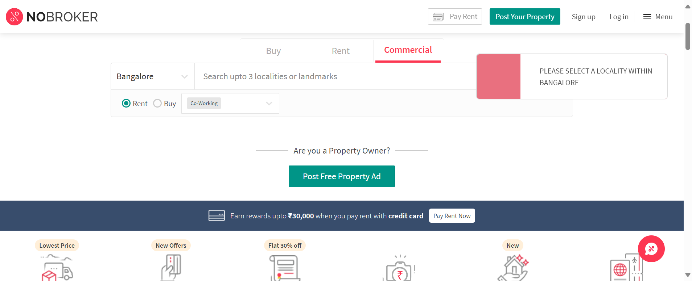Then User navigate to next pagecom.nobroker.stepDefinition.NoBrokerStepDef.screenShot(io.cucumber.java.Scenario)Testing commercial with valid inputsFailTesting commercial metro optionGiven User is in the No Broker websitecom.nobroker.stepDefinition.NoBrokerStepDef.screenShot(io.cucumber.java.Scenario)Testing commercial metro option
And User enter search buttoncom.nobroker.stepDefinition.NoBrokerStepDef.screenShot(io.cucumber.java.Scenario)Testing commercial with valid inputs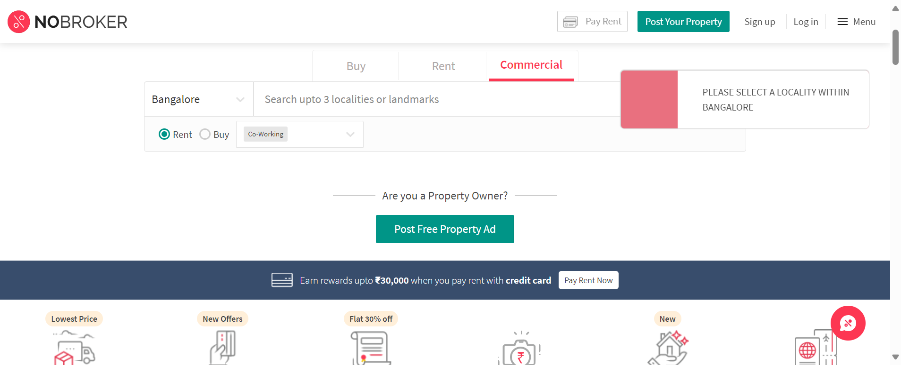Then User navigate to next pagecom.nobroker.stepDefinition.NoBrokerStepDef.screenShot(io.cucumber.java.Scenario)Testing commercial with valid inputsFailTesting commercial metro optionGiven User is in the No Broker websitecom.nobroker.stepDefinition.NoBrokerStepDef.screenShot(io.cucumber.java.Scenario)Testing commercial metro option When User clicks on the Commercial buttoncom.nobroker.stepDefinition.NoBrokerStepDef.screenShot(io.cucumber.java.Scenario)Testing commercial metro option
When User clicks on the Commercial buttoncom.nobroker.stepDefinition.NoBrokerStepDef.screenShot(io.cucumber.java.Scenario)Testing commercial metro option And user is on the Commercial Pagecom.nobroker.stepDefinition.NoBrokerStepDef.screenShot(io.cucumber.java.Scenario)Testing commercial metro option
And user is on the Commercial Pagecom.nobroker.stepDefinition.NoBrokerStepDef.screenShot(io.cucumber.java.Scenario)Testing commercial metro option When User enter dropdown buttoncom.nobroker.stepDefinition.NoBrokerStepDef.screenShot(io.cucumber.java.Scenario)Testing commercial metro option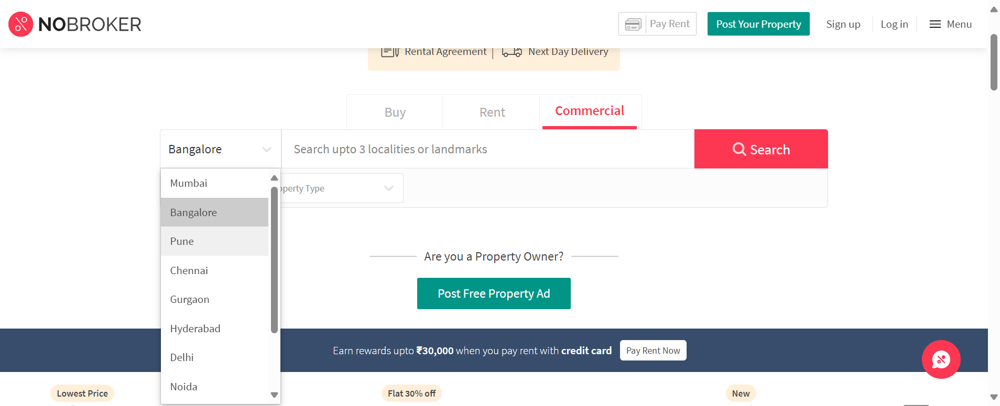And User enter locationcom.nobroker.stepDefinition.NoBrokerStepDef.screenShot(io.cucumber.java.Scenario)Testing commercial metro optionAnd User enter any three locality
When User enter dropdown buttoncom.nobroker.stepDefinition.NoBrokerStepDef.screenShot(io.cucumber.java.Scenario)Testing commercial metro option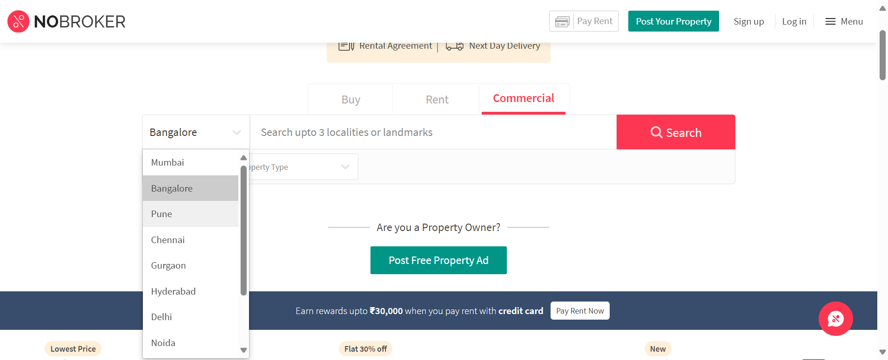And User enter locationcom.nobroker.stepDefinition.NoBrokerStepDef.screenShot(io.cucumber.java.Scenario)Testing commercial metro optionAnd User enter any three localitySortBy.xlsx com.nobroker.stepDefinition.NoBrokerStepDef.screenShot(io.cucumber.java.Scenario)Testing commercial metro optionAnd User select rent optioncom.nobroker.stepDefinition.NoBrokerStepDef.screenShot(io.cucumber.java.Scenario)Testing commercial metro option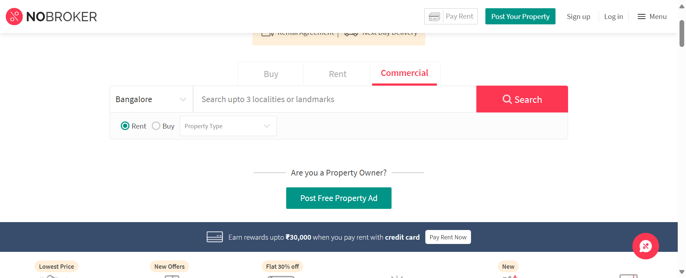And User enters property typecom.nobroker.stepDefinition.NoBrokerStepDef.screenShot(io.cucumber.java.Scenario)Testing commercial metro option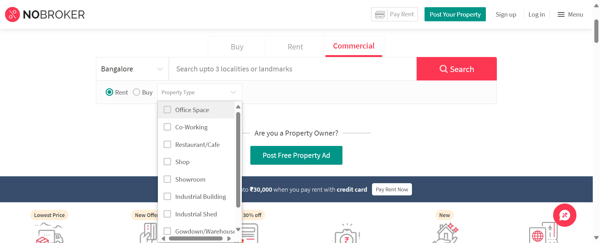And user select any one propertycom.nobroker.stepDefinition.NoBrokerStepDef.screenShot(io.cucumber.java.Scenario)Testing commercial metro option And User enter search buttoncom.nobroker.stepDefinition.NoBrokerStepDef.screenShot(io.cucumber.java.Scenario)Testing commercial metro optionAnd User navigate to next pagecom.nobroker.stepDefinition.NoBrokerStepDef.screenShot(io.cucumber.java.Scenario)Testing commercial metro option
And User enter search buttoncom.nobroker.stepDefinition.NoBrokerStepDef.screenShot(io.cucumber.java.Scenario)Testing commercial metro optionAnd User navigate to next pagecom.nobroker.stepDefinition.NoBrokerStepDef.screenShot(io.cucumber.java.Scenario)Testing commercial metro option And User select metro optionStep skippedAnd User select metro lineStep skippedAnd User select metro stationStep skippedAnd User select search buttonStep skippedThen User navigate to maps pageStep skippedFailTesting search buttonGiven User is in the No Broker websitecom.nobroker.stepDefinition.NoBrokerStepDef.screenShot(io.cucumber.java.Scenario)Testing search button
And User select metro optionStep skippedAnd User select metro lineStep skippedAnd User select metro stationStep skippedAnd User select search buttonStep skippedThen User navigate to maps pageStep skippedFailTesting search buttonGiven User is in the No Broker websitecom.nobroker.stepDefinition.NoBrokerStepDef.screenShot(io.cucumber.java.Scenario)Testing search button When User clicks on the Commercial buttoncom.nobroker.stepDefinition.NoBrokerStepDef.screenShot(io.cucumber.java.Scenario)Testing search button
When User clicks on the Commercial buttoncom.nobroker.stepDefinition.NoBrokerStepDef.screenShot(io.cucumber.java.Scenario)Testing search button And user is on the Commercial Pagecom.nobroker.stepDefinition.NoBrokerStepDef.screenShot(io.cucumber.java.Scenario)Testing search button
And user is on the Commercial Pagecom.nobroker.stepDefinition.NoBrokerStepDef.screenShot(io.cucumber.java.Scenario)Testing search button When User enter dropdown buttoncom.nobroker.stepDefinition.NoBrokerStepDef.screenShot(io.cucumber.java.Scenario)Testing search button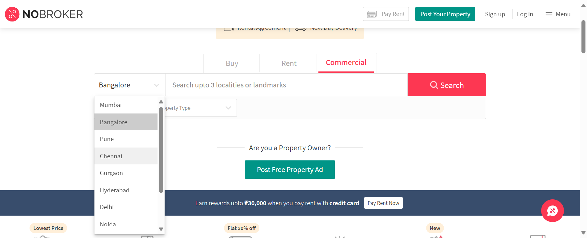And User enter locationcom.nobroker.stepDefinition.NoBrokerStepDef.screenShot(io.cucumber.java.Scenario)Testing search buttonAnd User enter any three locality
When User enter dropdown buttoncom.nobroker.stepDefinition.NoBrokerStepDef.screenShot(io.cucumber.java.Scenario)Testing search button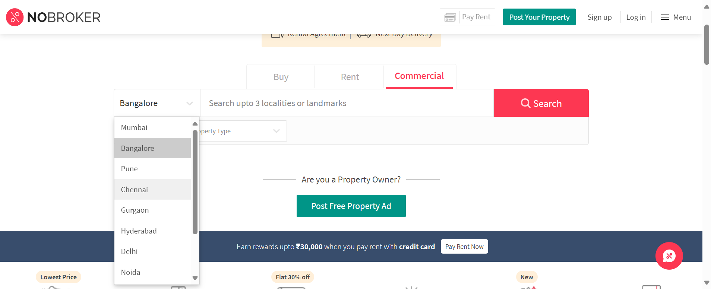And User enter locationcom.nobroker.stepDefinition.NoBrokerStepDef.screenShot(io.cucumber.java.Scenario)Testing search buttonAnd User enter any three localitySortBy.xlsx com.nobroker.stepDefinition.NoBrokerStepDef.screenShot(io.cucumber.java.Scenario)Testing search button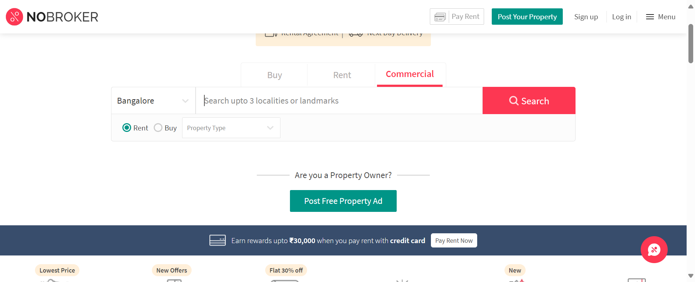And User select rent optioncom.nobroker.stepDefinition.NoBrokerStepDef.screenShot(io.cucumber.java.Scenario)Testing search buttonAnd User enters property typecom.nobroker.stepDefinition.NoBrokerStepDef.screenShot(io.cucumber.java.Scenario)Testing search button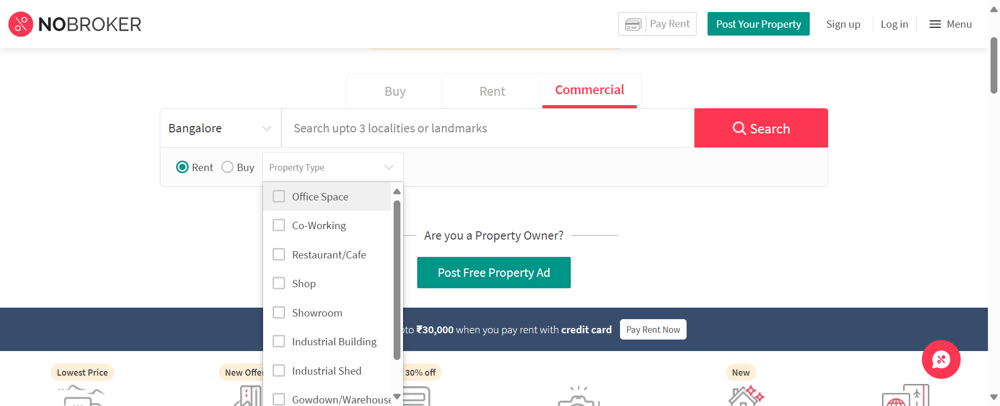And user select any one propertycom.nobroker.stepDefinition.NoBrokerStepDef.screenShot(io.cucumber.java.Scenario)Testing search button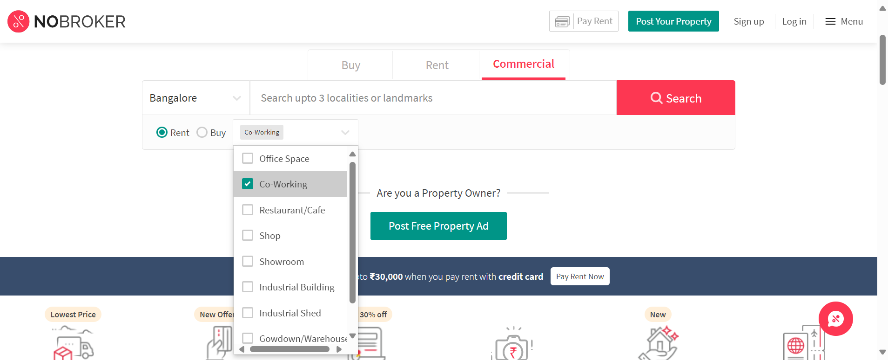And User enter search buttoncom.nobroker.stepDefinition.NoBrokerStepDef.screenShot(io.cucumber.java.Scenario)Testing search buttonThen User navigate to next pagecom.nobroker.stepDefinition.NoBrokerStepDef.screenShot(io.cucumber.java.Scenario)PassTesting commercial with invalid inputsGiven User is in the No Broker websitecom.nobroker.stepDefinition.NoBrokerStepDef.screenShot(io.cucumber.java.Scenario)Testing commercial with invalid inputs When User clicks on the Commercial buttoncom.nobroker.stepDefinition.NoBrokerStepDef.screenShot(io.cucumber.java.Scenario)Testing commercial with invalid inputs
When User clicks on the Commercial buttoncom.nobroker.stepDefinition.NoBrokerStepDef.screenShot(io.cucumber.java.Scenario)Testing commercial with invalid inputs And user is on the Commercial Pagecom.nobroker.stepDefinition.NoBrokerStepDef.screenShot(io.cucumber.java.Scenario)Testing commercial with invalid inputs
And user is on the Commercial Pagecom.nobroker.stepDefinition.NoBrokerStepDef.screenShot(io.cucumber.java.Scenario)Testing commercial with invalid inputs When User enter dropdown buttoncom.nobroker.stepDefinition.NoBrokerStepDef.screenShot(io.cucumber.java.Scenario)Testing commercial with invalid inputs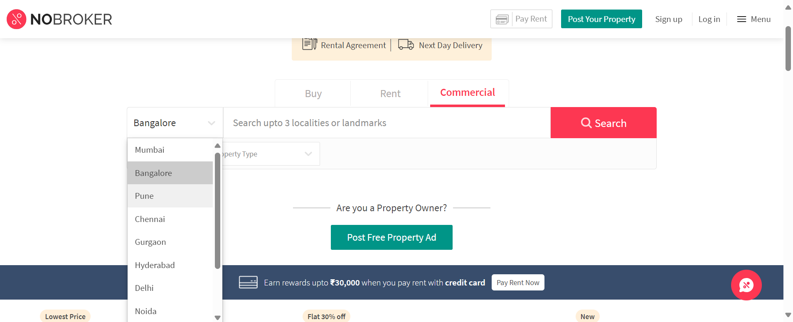And User enter locationcom.nobroker.stepDefinition.NoBrokerStepDef.screenShot(io.cucumber.java.Scenario)Testing commercial with invalid inputs
When User enter dropdown buttoncom.nobroker.stepDefinition.NoBrokerStepDef.screenShot(io.cucumber.java.Scenario)Testing commercial with invalid inputs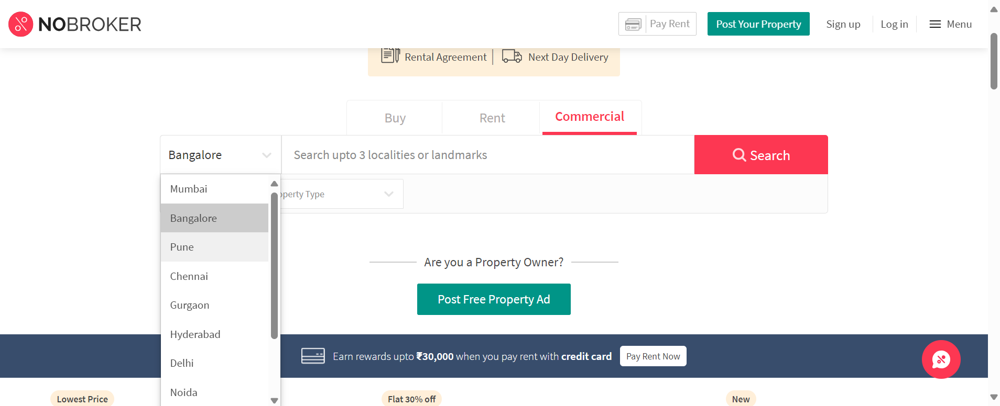And User enter locationcom.nobroker.stepDefinition.NoBrokerStepDef.screenShot(io.cucumber.java.Scenario)Testing commercial with invalid inputs And User select rent optioncom.nobroker.stepDefinition.NoBrokerStepDef.screenShot(io.cucumber.java.Scenario)Testing commercial with invalid inputs
And User select rent optioncom.nobroker.stepDefinition.NoBrokerStepDef.screenShot(io.cucumber.java.Scenario)Testing commercial with invalid inputs And User enters property typecom.nobroker.stepDefinition.NoBrokerStepDef.screenShot(io.cucumber.java.Scenario)Testing commercial with invalid inputsAnd user select any one propertycom.nobroker.stepDefinition.NoBrokerStepDef.screenShot(io.cucumber.java.Scenario)Testing commercial with invalid inputs
And User enters property typecom.nobroker.stepDefinition.NoBrokerStepDef.screenShot(io.cucumber.java.Scenario)Testing commercial with invalid inputsAnd user select any one propertycom.nobroker.stepDefinition.NoBrokerStepDef.screenShot(io.cucumber.java.Scenario)Testing commercial with invalid inputs And User enter search buttoncom.nobroker.stepDefinition.NoBrokerStepDef.screenShot(io.cucumber.java.Scenario)Testing commercial with invalid inputsThen User will not navigate to next pagecom.nobroker.stepDefinition.NoBrokerStepDef.screenShot(io.cucumber.java.Scenario)Testing commercial with invalid inputs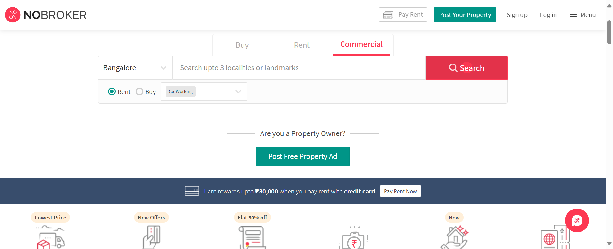FailTesting for Different LocationsFailTesting for Different LocationsGiven User is in the No Broker websitecom.nobroker.stepDefinition.NoBrokerStepDef.screenShot(io.cucumber.java.Scenario)Testing for Different Locations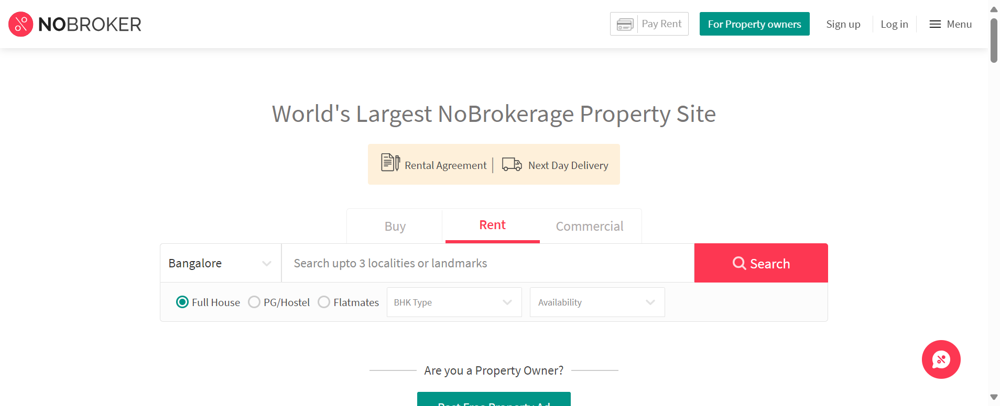When User clicks on the Commercial buttoncom.nobroker.stepDefinition.NoBrokerStepDef.screenShot(io.cucumber.java.Scenario)Testing for Different Locations
And User enter search buttoncom.nobroker.stepDefinition.NoBrokerStepDef.screenShot(io.cucumber.java.Scenario)Testing commercial with invalid inputsThen User will not navigate to next pagecom.nobroker.stepDefinition.NoBrokerStepDef.screenShot(io.cucumber.java.Scenario)Testing commercial with invalid inputs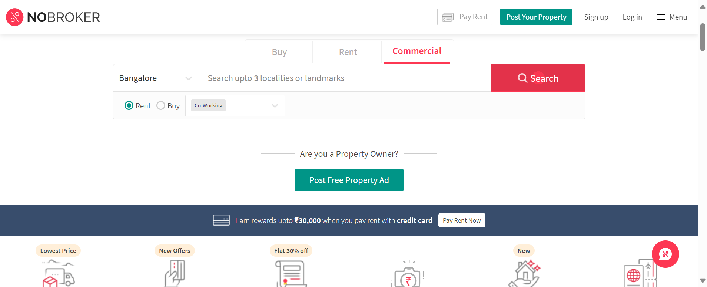FailTesting for Different LocationsFailTesting for Different LocationsGiven User is in the No Broker websitecom.nobroker.stepDefinition.NoBrokerStepDef.screenShot(io.cucumber.java.Scenario)Testing for Different Locations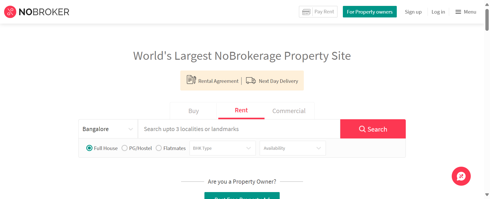When User clicks on the Commercial buttoncom.nobroker.stepDefinition.NoBrokerStepDef.screenShot(io.cucumber.java.Scenario)Testing for Different Locations And user is on the Commercial Pagecom.nobroker.stepDefinition.NoBrokerStepDef.screenShot(io.cucumber.java.Scenario)Testing for Different Locations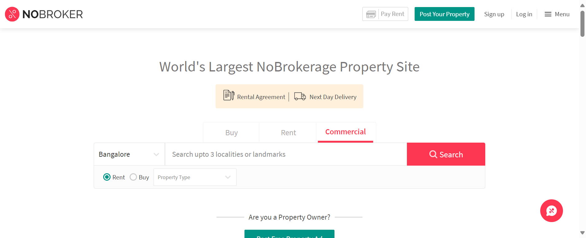When User enter dropdown buttoncom.nobroker.stepDefinition.NoBrokerStepDef.screenShot(io.cucumber.java.Scenario)Testing for Different LocationsWhen User enter locationcom.nobroker.stepDefinition.NoBrokerStepDef.screenShot(io.cucumber.java.Scenario)Testing for Different Locations
And user is on the Commercial Pagecom.nobroker.stepDefinition.NoBrokerStepDef.screenShot(io.cucumber.java.Scenario)Testing for Different Locations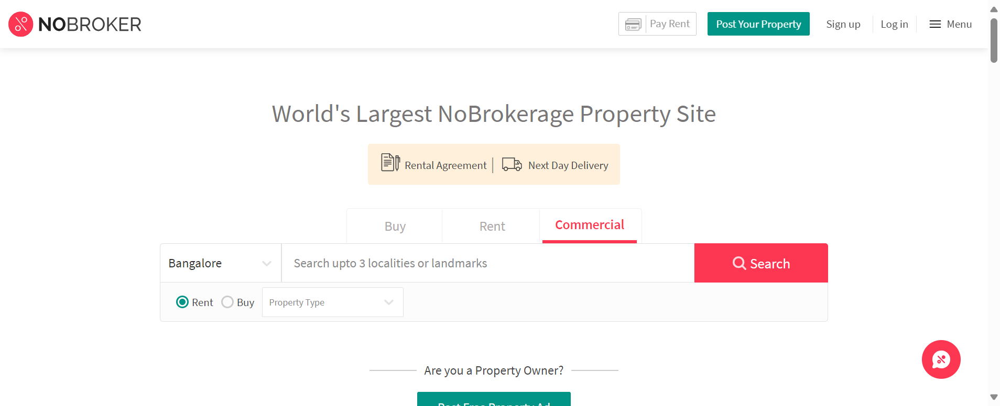When User enter dropdown buttoncom.nobroker.stepDefinition.NoBrokerStepDef.screenShot(io.cucumber.java.Scenario)Testing for Different LocationsWhen User enter locationcom.nobroker.stepDefinition.NoBrokerStepDef.screenShot(io.cucumber.java.Scenario)Testing for Different Locations And User enter any three localities "11"com.nobroker.stepDefinition.NoBrokerStepDef.screenShot(io.cucumber.java.Scenario)Testing for Different LocationsAnd User select rent optioncom.nobroker.stepDefinition.NoBrokerStepDef.screenShot(io.cucumber.java.Scenario)Testing for Different Locations
And User enter any three localities "11"com.nobroker.stepDefinition.NoBrokerStepDef.screenShot(io.cucumber.java.Scenario)Testing for Different LocationsAnd User select rent optioncom.nobroker.stepDefinition.NoBrokerStepDef.screenShot(io.cucumber.java.Scenario)Testing for Different Locations And User enters property typecom.nobroker.stepDefinition.NoBrokerStepDef.screenShot(io.cucumber.java.Scenario)Testing for Different LocationsAnd user select any one propertycom.nobroker.stepDefinition.NoBrokerStepDef.screenShot(io.cucumber.java.Scenario)Testing for Different Locations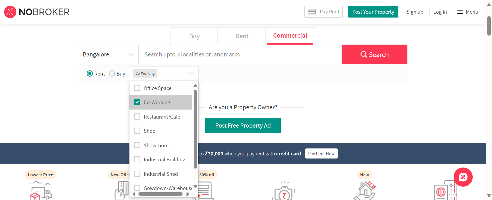And User enter search buttoncom.nobroker.stepDefinition.NoBrokerStepDef.screenShot(io.cucumber.java.Scenario)Testing for Different LocationsThen User navigate to next pagecom.nobroker.stepDefinition.NoBrokerStepDef.screenShot(io.cucumber.java.Scenario)FailTesting for Different LocationsGiven User is in the No Broker websitecom.nobroker.stepDefinition.NoBrokerStepDef.screenShot(io.cucumber.java.Scenario)Testing for Different Locations
And User enters property typecom.nobroker.stepDefinition.NoBrokerStepDef.screenShot(io.cucumber.java.Scenario)Testing for Different LocationsAnd user select any one propertycom.nobroker.stepDefinition.NoBrokerStepDef.screenShot(io.cucumber.java.Scenario)Testing for Different Locations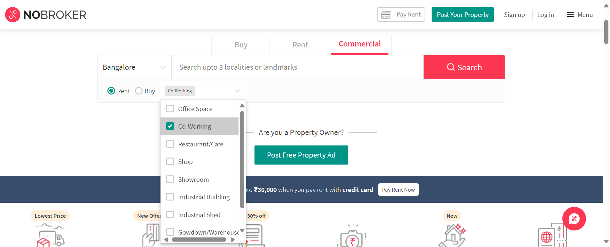And User enter search buttoncom.nobroker.stepDefinition.NoBrokerStepDef.screenShot(io.cucumber.java.Scenario)Testing for Different LocationsThen User navigate to next pagecom.nobroker.stepDefinition.NoBrokerStepDef.screenShot(io.cucumber.java.Scenario)FailTesting for Different LocationsGiven User is in the No Broker websitecom.nobroker.stepDefinition.NoBrokerStepDef.screenShot(io.cucumber.java.Scenario)Testing for Different Locations When User clicks on the Commercial buttoncom.nobroker.stepDefinition.NoBrokerStepDef.screenShot(io.cucumber.java.Scenario)Testing for Different Locations
When User clicks on the Commercial buttoncom.nobroker.stepDefinition.NoBrokerStepDef.screenShot(io.cucumber.java.Scenario)Testing for Different Locations And user is on the Commercial Pagecom.nobroker.stepDefinition.NoBrokerStepDef.screenShot(io.cucumber.java.Scenario)Testing for Different Locations
And user is on the Commercial Pagecom.nobroker.stepDefinition.NoBrokerStepDef.screenShot(io.cucumber.java.Scenario)Testing for Different Locations When User enter dropdown buttoncom.nobroker.stepDefinition.NoBrokerStepDef.screenShot(io.cucumber.java.Scenario)Testing for Different LocationsWhen User enter locationcom.nobroker.stepDefinition.NoBrokerStepDef.screenShot(io.cucumber.java.Scenario)Testing for Different Locations
When User enter dropdown buttoncom.nobroker.stepDefinition.NoBrokerStepDef.screenShot(io.cucumber.java.Scenario)Testing for Different LocationsWhen User enter locationcom.nobroker.stepDefinition.NoBrokerStepDef.screenShot(io.cucumber.java.Scenario)Testing for Different Locations And User enter any three localities "12"com.nobroker.stepDefinition.NoBrokerStepDef.screenShot(io.cucumber.java.Scenario)Testing for Different LocationsAnd User select rent optioncom.nobroker.stepDefinition.NoBrokerStepDef.screenShot(io.cucumber.java.Scenario)Testing for Different Locations
And User enter any three localities "12"com.nobroker.stepDefinition.NoBrokerStepDef.screenShot(io.cucumber.java.Scenario)Testing for Different LocationsAnd User select rent optioncom.nobroker.stepDefinition.NoBrokerStepDef.screenShot(io.cucumber.java.Scenario)Testing for Different Locations And User enters property typecom.nobroker.stepDefinition.NoBrokerStepDef.screenShot(io.cucumber.java.Scenario)Testing for Different Locations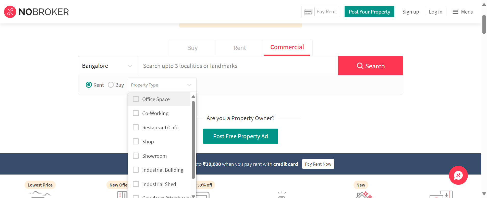And user select any one propertycom.nobroker.stepDefinition.NoBrokerStepDef.screenShot(io.cucumber.java.Scenario)Testing for Different Locations
And User enters property typecom.nobroker.stepDefinition.NoBrokerStepDef.screenShot(io.cucumber.java.Scenario)Testing for Different Locations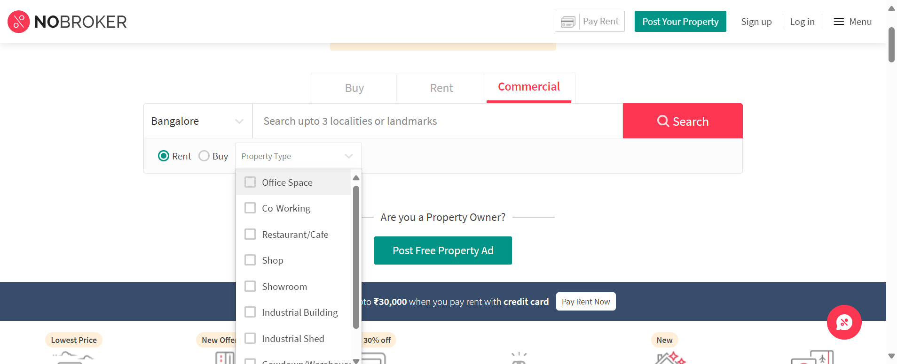And user select any one propertycom.nobroker.stepDefinition.NoBrokerStepDef.screenShot(io.cucumber.java.Scenario)Testing for Different Locations And User enter search buttoncom.nobroker.stepDefinition.NoBrokerStepDef.screenShot(io.cucumber.java.Scenario)Testing for Different Locations
And User enter search buttoncom.nobroker.stepDefinition.NoBrokerStepDef.screenShot(io.cucumber.java.Scenario)Testing for Different Locations Then User navigate to next pagecom.nobroker.stepDefinition.NoBrokerStepDef.screenShot(io.cucumber.java.Scenario)
Then User navigate to next pagecom.nobroker.stepDefinition.NoBrokerStepDef.screenShot(io.cucumber.java.Scenario)
-
org.openqa.selenium.NoSuchElementException
5 tests
org.openqa.selenium.NoSuchElementException
5 failedStatus Timestamp TestName Fail 11:52:57 am Then User navigate to next page Commercial Functional Testing.Testing commercial with valid inputs.Then User navigate to next pageFail 11:55:15 am And User navigate to next page Commercial Functional Testing.Testing commercial metro option.And User navigate to next pageFail 11:57:59 am Then User navigate to next page Commercial Functional Testing.Testing search button.Then User navigate to next pageFail 12:01:40 pm Then User navigate to next page Commercial Functional Testing.Testing for Different Locations.Then User navigate to next pageFail 12:03:30 pm Then User navigate to next page Commercial Functional Testing.Testing for Different Locations.Then User navigate to next page -
org.openqa.selenium.NoSuchWindowException
3 tests
org.openqa.selenium.NoSuchWindowException
3 failedStatus Timestamp TestName Fail 11:58:23 am com.nobroker.stepDefinition.NoBrokerStepDef.screenShot(io.cucumber.java.Scenario) Commercial Functional Testing.Testing search button.com.nobroker.stepDefinition.NoBrokerStepDef.screenShot(io.cucumber.java.Scenario)Fail 12:01:54 pm com.nobroker.stepDefinition.NoBrokerStepDef.screenShot(io.cucumber.java.Scenario) Commercial Functional Testing.Testing for Different Locations.com.nobroker.stepDefinition.NoBrokerStepDef.screenShot(io.cucumber.java.Scenario)Fail 12:03:36 pm com.nobroker.stepDefinition.NoBrokerStepDef.screenShot(io.cucumber.java.Scenario) Commercial Functional Testing.Testing for Different Locations.com.nobroker.stepDefinition.NoBrokerStepDef.screenShot(io.cucumber.java.Scenario)
-
@Commercial
7 tests
@Commercial
2 passed 5 failedStatus Timestamp TestName Pass 11:49:47 am Testing UI for Commercial page Commercial Functional Testing.Testing UI for Commercial pageFail 11:51:20 am Testing commercial with valid inputs Commercial Functional Testing.Testing commercial with valid inputsFail 11:53:27 am Testing commercial metro option Commercial Functional Testing.Testing commercial metro optionFail 11:55:45 am Testing search button Commercial Functional Testing.Testing search buttonPass 11:58:23 am Testing commercial with invalid inputs Commercial Functional Testing.Testing commercial with invalid inputsFail 12:00:02 pm Testing for Different Locations Commercial Functional Testing.Testing for Different LocationsFail 12:01:54 pm Testing for Different Locations Commercial Functional Testing.Testing for Different Locations -
@multiple_Input_Test
2 tests
@multiple_Input_Test
2 failedStatus Timestamp TestName Fail 12:00:02 pm Testing for Different Locations Commercial Functional Testing.Testing for Different LocationsFail 12:01:54 pm Testing for Different Locations Commercial Functional Testing.Testing for Different Locations -
@Valid_Input_Test
1 tests
@Valid_Input_Test
1 failedStatus Timestamp TestName Fail 11:51:20 am Testing commercial with valid inputs Commercial Functional Testing.Testing commercial with valid inputs -
@metro_option_test
1 tests
@metro_option_test
1 failedStatus Timestamp TestName Fail 11:53:27 am Testing commercial metro option Commercial Functional Testing.Testing commercial metro option -
@invalid_input_test
1 tests
@invalid_input_test
1 passedStatus Timestamp TestName Pass 11:58:23 am Testing commercial with invalid inputs Commercial Functional Testing.Testing commercial with invalid inputs -
@UI_Test
1 tests
@UI_Test
1 passedStatus Timestamp TestName Pass 11:49:47 am Testing UI for Commercial page Commercial Functional Testing.Testing UI for Commercial page -
@Button_Test
1 tests
@Button_Test
1 failedStatus Timestamp TestName Fail 11:55:45 am Testing search button Commercial Functional Testing.Testing search button
Started
Dec 28, 2024 11:49:46 am
Ended
Dec 28, 2024 12:03:36 pm
Features Passed
0
Features Failed
1
Features
Scenarios
Steps
Timeline
Tags
| Name | Passed | Failed | Skipped | Others | Passed % |
|---|---|---|---|---|---|
| @Commercial | 2 | 5 | 0 | 0 | 28.571% |
| @multiple_Input_Test | 0 | 2 | 0 | 0 | 0% |
| @Valid_Input_Test | 0 | 1 | 0 | 0 | 0% |
| @metro_option_test | 0 | 1 | 0 | 0 | 0% |
| @invalid_input_test | 1 | 0 | 0 | 0 | 100% |
| @UI_Test | 1 | 0 | 0 | 0 | 100% |
| @Button_Test | 0 | 1 | 0 | 0 | 0% |
System/Environment
| Name | Value |
|---|---|
| AppName | {NoBroker} |
| user | {Abhipsa Dash} |
| build | {v 1.1} |